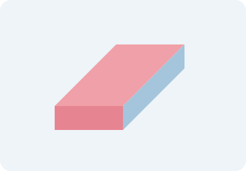

Cuadernos
Sirven para tomar apuntes y organizar ideas.
?tiles para el d?a a d?a en clase ? Proyecto acad?mico
Ilustraciones orientativas creadas para esta tarea; no representan modelos comerciales ni existencias.
Sirven para tomar apuntes y organizar ideas.

Se utilizan para escribir y dibujar con grafito.

Permiten corregir trazos de l?piz.
Ayudan a transportar los materiales de clase.
Sirven para medir y trazar l?neas rectas.
| Producto | Uso general | ?rea de uso |
|---|---|---|
| Cuadernos | Tomar apuntes | Escritura y correcci?n |
| L?pices | Escribir con grafito | |
| Borradores | Borrar trazos de l?piz | |
| Mochilas | Transportar materiales | Organizaci?n |
| Reglas | Medir longitudes | Medici?n |
| Nota | Sin precios ni disponibilidad confirmados. | |
Este marco muestra una gu?a local que se puede abrir tambi?n en una p?gina independiente.
Pendiente: incorporar un audio o video educativo confirmado con controles y su elemento source. Este marco no sustituye ese requisito.